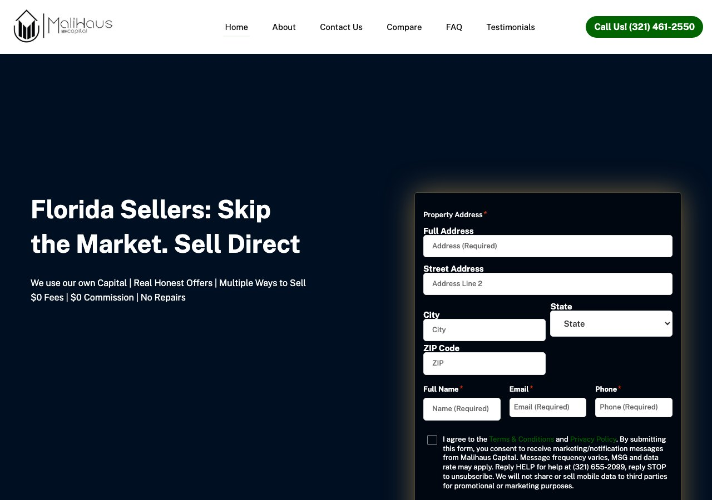
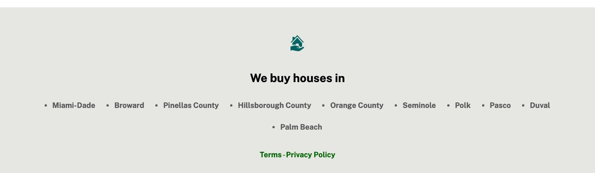
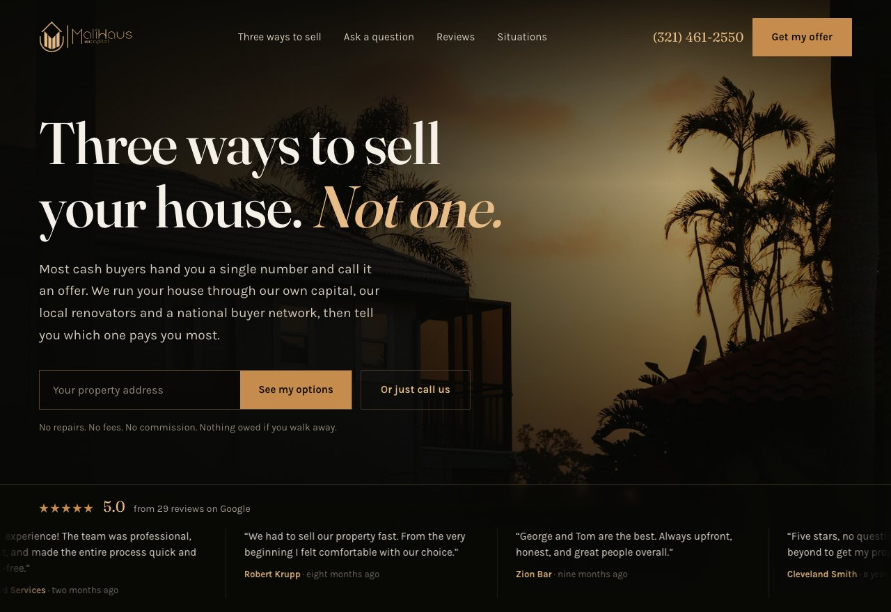
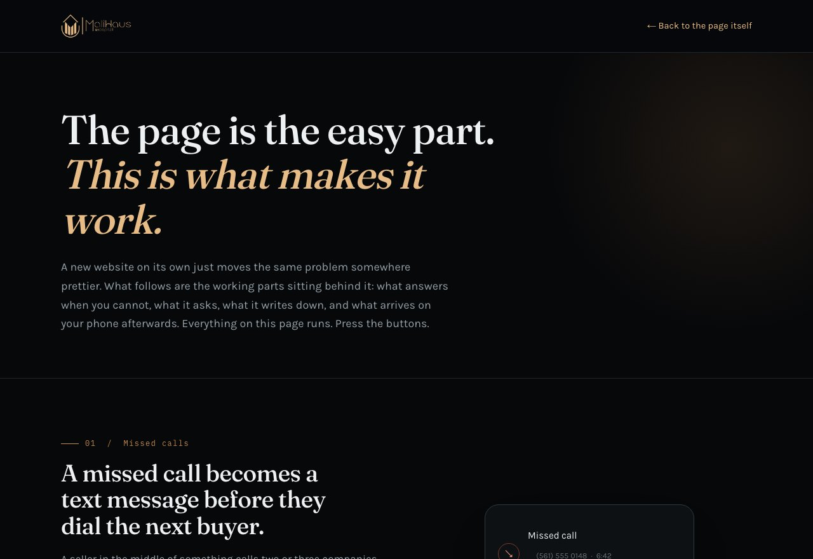

For George Munoz, MaliHaus Capital
From Andrew Cherry
24 August 2026
George,
After our call on 21 August I spent proper time on malihaus.com, and on the eight pages behind it. First the way one of your sellers would, then looking at what Google and the AI assistants can actually see of you. Everything below is what I found, in the order I would deal with it.
The offer is not the problem. Cash, as is, no fees, no commission, and the ability to run a house through more than one outlet rather than just making an offer on it. That last part is genuinely unusual. The problem is how little of it reaches the person on the page, that once they are there, there is only one way in and it is a long one, and that the way in does not go where you think it does.
I rang (321) 461-2550, the number in the header of every page, on every call button and in the footer. The recording says:
Homes.com is a listing portal owned by CoStar. Its stated model is to connect a caller to the listing agent. Your website exists to tell people the opposite, that you buy the house yourself and they do not need an agent. You even have a page called Compare that sets you against exactly that.
So a seller who has decided to trust you, picked up the phone and dialled the number on your own website hears a different company's name and is offered an agent. If that person is nervous about being taken advantage of, and most of them are, that is where the call ends.
As to why, Homes.com's own support pages describe the mechanism. Every Homes.com profile is automatically issued what they call a Call Tracking Number, and calls to it are forwarded on to the primary number held in that profile. In their words, it is “generated as soon as your profile with Homes.com is created”.
So the most likely explanation is that (321) 461-2550 is a Homes.com tracking number that came with a profile somebody set up, and it has ended up as the main number across your website. Your calls probably do still reach you, because it forwards. They simply hear Homes.com on the way through. I cannot confirm that from outside and I am not going to state it as fact, but you can settle it in one phone call to whoever set the number up.
Three things follow, and they are the reason this is at the top of the letter rather than the bottom.
I also hung up without pressing anything, which from your side ought to look like somebody who rang and gave up. No text ever came back. That is worth knowing on its own, but there is a subtler problem underneath it. If a third party's recording answers the call, then as far as your own systems are concerned the call was answered, not missed. So a seller can ring you, hear another company, hang up, and never appear anywhere as somebody who tried to reach you.
First, every caller hears another company before they hear yours. Second, if the number belongs to a Homes.com profile then it is not your number, and the day that profile lapses, the number on your website, your signs and anything you have ever printed stops working. Third, the call data, including who rang and when, sits in somebody else's system rather than yours, which is part of why none of this can be measured.
You have twenty nine reviews on Google at a five star average. On the site there are none at all. The page headed Testimonials has no testimonials on it. It carries four press quotes, from Sold.com, Forbes, Realty Biz News and Home World Design, and a link that sends people off your site to read your reviews somewhere else.
So the one page a nervous seller opens to find out whether you can be trusted asks them to leave in order to find out. Most of them will not come back.
That is the cheapest thing on this list to fix and probably the most valuable. The reviews come onto the site and keep syncing, so new ones appear on their own, and the rating sits high enough on the page to be seen before anyone scrolls. The same piece of work puts your stars into Google's results as well.
Today a seller can call the number or fill in the form. Both put the effort on them and then make them wait.
The form appears four times on the home page. Each time it asks for the full address, the street line, the city, the state, the ZIP, a name, an email and a phone number, and nearly all of it is required. The state field is a dropdown of all fifty states plus Guam, Puerto Rico, the US Virgin Islands, American Samoa, the Northern Mariana Islands and three Armed Forces regions. On a phone that is a sixty item scroll to answer a question you already know the answer to.

Every extra field costs you completions, and asking for all of them before the seller has any idea what they will get costs more. Ask for the address and nothing else, then bring the rest in once they are committed. And what the page promises in return is that your team will contact them. No indication of a range, of a timescale, or of which of your routes might suit their situation.
There is also no way to book a time, which leaves all the chasing with you. And there is nothing at all for the seller who does not want to fill in a form. No chat, no instant reply, no path outside office hours. Someone reading your page at nine in the evening about a house they have inherited has no way to ask a single question. They close the tab and open the next buyer's.
That gap is the one I would close first after the reviews. Something on the site that answers straight away, day or night, that can take the address and the situation and hand you a lead that is already warm. The same thing extends to the phone, so a call you miss comes back as a text within seconds instead of sitting in a voicemail box. And a calendar a seller can book into directly, with reminders, so they actually turn up.
One small thing in the same area. On a phone there is nowhere persistent to tap. The number sits in the header, and the page runs to about five and a half thousand pixels, so it is gone the moment anyone scrolls.
Someone handing a house to a company they found online is making a large and frightening decision. The site asks them to do that on the strength of the writing alone.
Six of the images on the home page are generic line icons served from your website provider's own shared library, so the same ones appear on other companies' sites. There are no photographs of houses you have bought, no before and after, no closing figures, no map of where you have worked, and no picture of you or anyone on the team. Nobody is named anywhere on it.
The bigger loss is that the one thing that is actually yours is buried. Most cash buyers make an offer and that is the whole conversation. You can put a house through your own capital, through local renovators, or through national auction and buyer platforms, which means you can create competition for a property instead of simply pricing it. On the site that appears once, in the middle, in a short paragraph under a row of stock icons that say the same generic things every other buyer says. It should be the leading idea on the page. It is the only claim you make that a seller cannot get from the buyer down the road.
Part of why the page cannot carry any of that is that it is not really your page. The layout, the icon set and the section structure come from a template that a large number of other investor sites also run, and it decides what can and cannot go on it. A seller comparing three buyers in one evening ends up looking at three versions of the same page, and at that point price is the only visible difference between you.
There are three different phone numbers for your business in public right now.
The 655 number sits in the messaging consent wording, so that is almost certainly your dedicated texting line, and having one is the right thing to do.
There is something else in that list, though. Boca Raton is area code 561. Not one of your three numbers is a 561 number. Two are 321, which is Brevard and Seminole up on the Space Coast, and the one on Google is 407, which is Orlando. For a business whose address, page title and search description all say Boca Raton, every number you publish reads as Central Florida.
The one that matters is the third. Your Google listing carries a 407 number, an Orlando area code, against a Boca Raton address. Consistency across your listings is one of the things local ranking is built on. It also means you cannot tell which number produced which lead, and a seller who sees one number on Google and a different one on the site has a small reason to pause.
The location story does not hold together either. The page title says Boca Raton, the headline says Florida, the home page says Central Florida renovators, the About page talks about buyers in Central Florida, and the Google listing is a Boca Raton address with an Orlando area code. A seller in Boca reads Central Florida and wonders whether you are actually local to them. Boca Raton is not Central Florida, and the two halves of your own site do not agree on which one you are.

The footer lists ten counties: Miami Dade, Broward, Pinellas, Hillsborough, Orange, Seminole, Polk, Pasco, Duval and Palm Beach. Each does have its own page with its own heading, so the content is there and it is worth keeping. The problem is everything wrapped around it.
All ten carry the identical page title, "Sell My House Fast Boca Raton, FL", and the identical description, which also says Boca Raton. Their addresses read /city/boca-raton-2, /city/boca-raton-5 and so on. So the Duval County page, which is Jacksonville and three hundred miles away, tells Google in its title, its description and its web address that it is about Boca Raton. Only the heading says otherwise, and the heading is the weakest of the four signals.
Ten pages competing for one title is how good local content gets held back. The fix is not to delete them. It is to make the title, the description and the address of each one say what that page is actually about.
Your Google listing is categorized as a real estate agency. If you also take listings then that is correct for that side of the business and it should stay. What is awkward is that the same profile is the front door for the cash purchase side, where the seller has usually arrived precisely because they do not want an agent. They go looking for a buyer and are shown an agency. That one is worth talking through before anything gets changed, because the right answer depends on how you intend the two halves of the business to sit next to each other. Either way there are secondary categories missing, the profile is incomplete, and it is where a steady flow of new reviews ought to start.
Separately, buyershaus.com currently carries exactly the same page title as malihaus.com. Different audience, different offer, wearing the seller site's title. It needs its own.
Then there is AI search, which is where a growing share of sellers now begin. When someone asks an assistant how to sell an inherited house in Florida without doing repairs, the answer is assembled from pages that address that exact situation in plain language and are marked up so a machine can read the question and the answer together. You have an FAQ page, but it carries none of that markup, so an assistant cannot read it as questions and answers. And there is no page at all on probate, on inherited property, on being behind on payments, on divorce, on relocation, on a rental someone is tired of, or on a house that will not pass inspection. That work compounds, and it keeps running after a budget stops.
This is the short one, and it is the one that limits everything else. I went through what the site serves and every request it makes. There is no Google Analytics, no tag manager, no advertising pixel of any kind and no call tracking. The only thing recording anything is your website provider's own page counter.
Which means that today you cannot tell how many people visit, where they came from, how many reach a form, how many abandon it halfway, which page produced a lead, or what any lead cost you. If you spend money on traffic tomorrow, none of it can be attributed to anything.
The page is also slower than it needs to be, because it hands its editing and media management code to ordinary visitors, roughly a hundred scripts including the whole page builder. None of it does anything for a seller and all of it has to download first. That matters most on exactly the traffic you want, which is somebody on a phone, on mobile data, in a hurry.
None of this is a criticism of the business. Your reviews say the service is genuinely good, and the multiple routes are a real advantage that most of your competition does not have. The whole gap is between what is true about MaliHaus and what somebody standing on your website can see and do about it.
Rather than describe it, I built it. There are two links below. The first is the page a seller would land on. The second shows what runs behind it, because a better looking website on its own would just move the same problem somewhere prettier.


Happy to walk through any of this on a call, and to go through both properly with you.